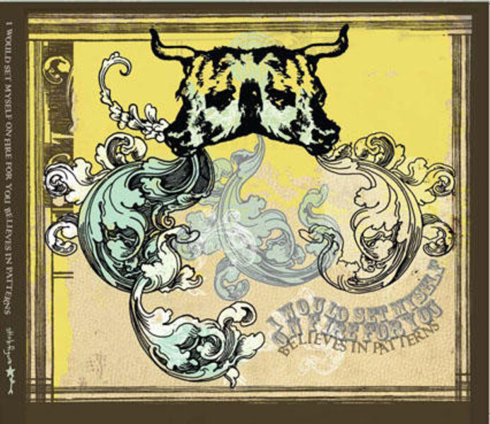
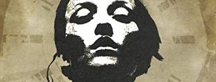
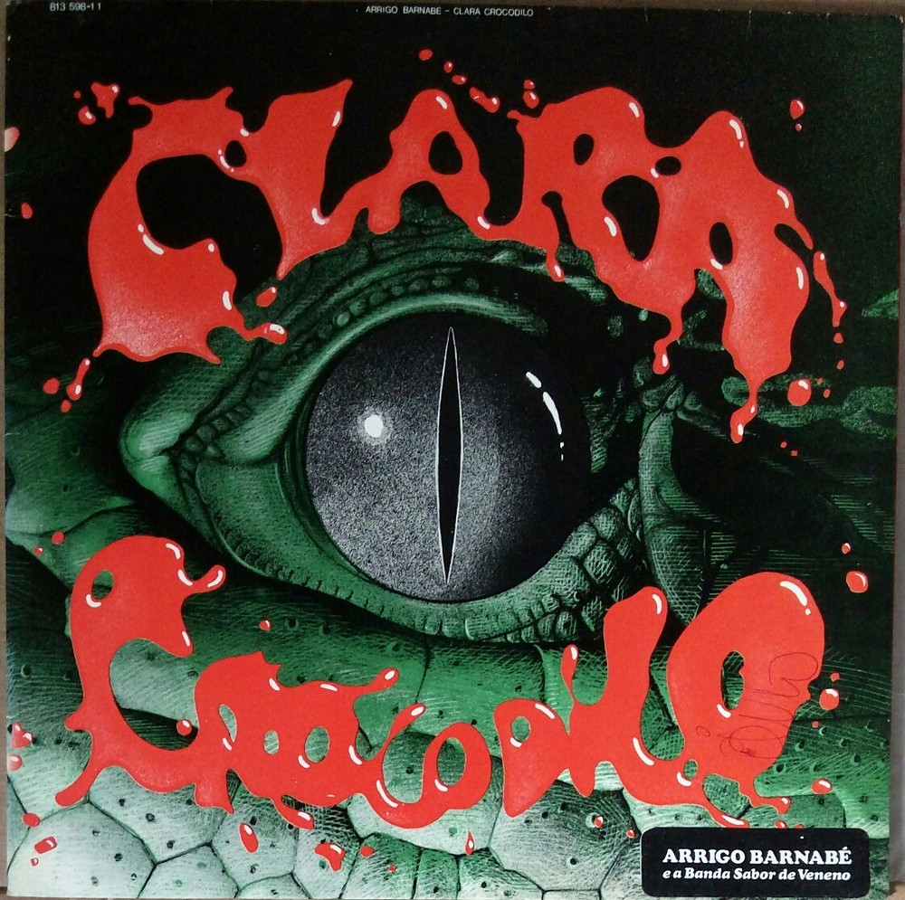
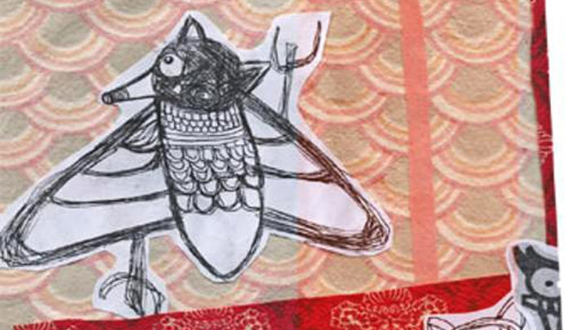
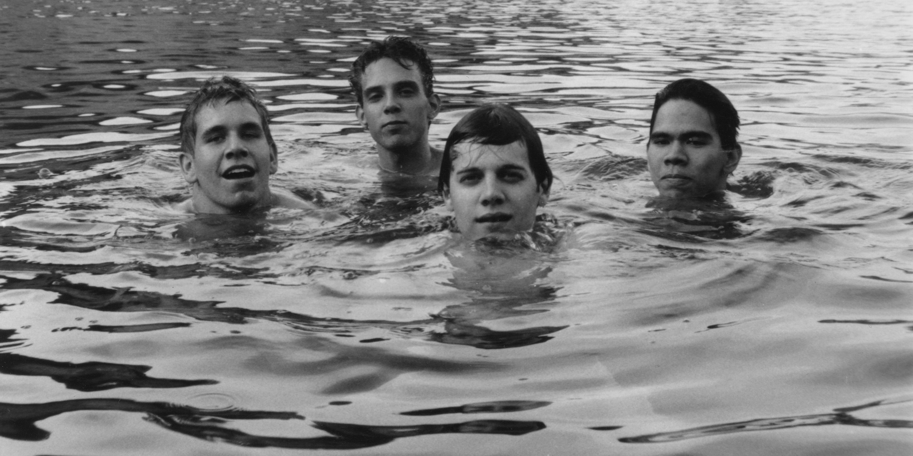
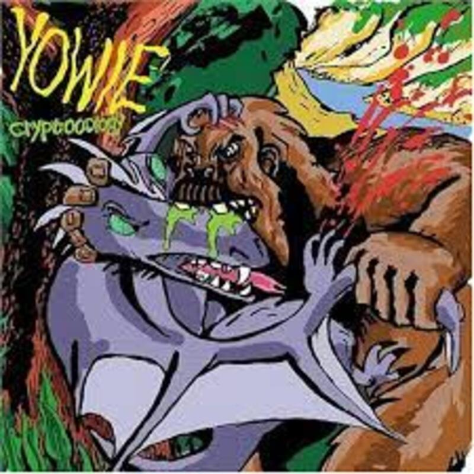

AH N SEI OQ MUSICA FILME
INICIO
MUSICA
DÉCADAS
ANTES DOS 60
1960
1970
1980
1990
2000
2010
2020>
GÊNEROS
SCREAMO
EXPERIMENTAL
FILME
DÉCADAS
ANTES DOS 60
1960
1970
1980
1990
2000
2010
2020>
GÊNEROS
DRAMA
TERROR
LANÇAMENTOS
MUSICA
FILME
RETROSPECTIVA
MUSICA
FILME

I Would Set Myself On Fire For You: Believe In Patterns
A junção extrema do screamo com o experimental.

Converge: Jane Doe
O álbum mais intenso já produzido.

Arrigo Barnabé: Clara Crocodilo
Clara Crocodilo.
COISA BOA
Believe In Patterns(2006)
Crítica
Clara Crocodilo (1980)
Crítica

Tempestade Bipolar (2005)
Crítica

Spiderland (1991)
Crítica
Jane Doe (2001)
Crítica

Cryptooology (2004)
Crítica
ÚLTIMAS
Slint: Spiderland
Lançado em 2006, o álbum apesar de pouco conhecido, é extremamente influente na cena experimental do screamo.
Além disso, é um dos meus favoritos. A originalidade e inovação presentes separam ele de qualquer outro album do genero pra mim
LER TUDO
Arrigo Barnabé: Clara Crocodilo
Lançado em 2006, o álbum apesar de pouco conhecido, é extremamente influente na cena experimental do screamo.
Além disso, é um dos meus favoritos. A originalidade e inovação presentes separam ele de qualquer outro album do genero pra mim
LER TUDO
Yowie: Cryptooology
Lançado em 2006, o álbum apesar de pouco conhecido, é extremamente influente na cena experimental do screamo.
Além disso, é um dos meus favoritos. A originalidade e inovação presentes separam ele de qualquer outro album do genero pra mim
LER TUDO
I Would Set Myself On Fire For You: Believe In Patterns
Lançado em 2006, o álbum apesar de pouco conhecido, é extremamente influente na cena experimental do screamo.
Além disso, é um dos meus favoritos. A originalidade e inovação presentes separam ele de qualquer outro album do genero pra mim
LER TUDO
VER TODAS